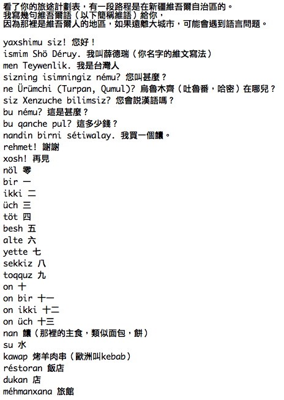
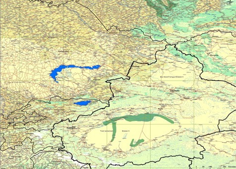

今天在寫程式碼註解之餘（要交接工作了）順便蒐集了我會經過的八個國家的一些基本資料。
這八個國家依序分別是：中國、哈薩克、俄羅斯、烏克蘭、波蘭、德國、比利時、法國。
然後發現一些顯而易見的問題：
1.我的數學一定要很好才行 ~_~
八個國家就有六種不同的幣值，中國用人民幣（MCY）1:4.26台幣，哈薩克用堅戈(KZT)1:0.26台幣。
俄羅斯用盧布（RUR）1:1.26台幣，烏克蘭用格里芙納(UHR)1:6.52台幣，波蘭用茲羅提(Zloty)1:11.15台幣，
德國、比利時和法國用歐元（EU）1:43.42台幣，而我會帶去出門的，大概是天殺的美金（USD）。
或許行李中要考慮放一台計算機，不然騎到後來，東西到底是貴還是便宜，我可能會心算到腦殘～
2.我的語文一定要挺得住才行 @_@
雖然我從來都不覺得語言不通對於旅行會造成什麼影響，一句法語都不會講，我還是好好的活了兩個月，
還順便學了幾句實用的回台灣，要是現在遇到法國人，我還可以問他『住旅館一個晚上多少錢？ 』 =.=
反正會比手畫腳外加臉部表情、還有紙筆鬼畫符，我相信應該是可以通行天下的！
就算 這一路上的國家說得都是不同的語言，根據簡單的統計，一共有德語、法語、荷蘭語、烏克蘭語、波蘭語、
俄語、哈薩克語，別以為到了中國就沒事，每個省都有一大堆的方言，我怕我講中文大家也跟我搖頭說聽不懂 >"<
除了今天發現的這兩點令人開心的結果，（不知道為什麼就突然覺得這是一件好事），
我想後續還會有很多奇奇怪怪的問題要想辦法解決。
這次出發前，要先去醫院挨很多針，因為一路上會經過一些衛生環境不是挺好的國家。
估計自己大概需要打4~5種疫苗吧。
其實我不怕打針，因為針頭插進去的感覺還挺有快感的，所以我很喜歡去捐血，
捐血用的那種針頭，真是粗的有點像吸管，非常有feeling～
我怕的是我打了這麼多的針，然後經過一些疫區的國家，那回台灣之後，我就不能捐血啦 /_\
我一年捐血三次的短暫樂趣，就要被剝奪了 T_T
今天查了一下自己的捐血記錄，累積到目前為只一共捐了37次，每次500CC。
以我現在的體重，今天量是79KG（很不錯吧～3月1日從83KG開始減，一個星期就瘦了4KG了）
醫學常識，血液佔人體的1/13，所以我體內一共有大約六公升的血液在流動。
捐了37次X500CC，大概就捐掉了將近19公升，已經把自己全身的血給捐光光3次了。
我只要每次想到之前那一個血液基金會的廣告一個小女孩抱著一隻小玩偶，
天真無邪的說『我不認識你，但是我謝謝你。』的時候，我都會很想把袖子捲起來。
看來今年最後一次可以捐血是在3月23日，之後回來不知道要列入觀察期多久 XD
疫苗施打的部份，由於銘龍的弟弟剛好是醫生，所以就請他幫我研究一下要打哪些針。
今日贊助的部份，兩位Mac使用者Gina和徐國凱分別贊助了10美金和台幣2000元。
被我抓到了吧，又是在我網站潛水多年的傢伙，你們終於浮上水面了 :D
我出國的這段時間，就比較難更新Mac中文化下載的網頁，要是能找到交棒的人該有多好 ._.
台積同仁-吳文斌贊助台幣2000元，目前台積電有贊助錢給我的，九成以上都是我不認識的人 ~_~
而且 都是幾千幾千的贊助，出手很慷慨，讓我很激昂。
今天的特別人物，還是被大陸的學生給拿下了，一位20來歲，在德國唸書的鄭初陽贊助了8美金。
重點不在於他贊助了多少錢，他在德國打工唸書（看來應該是學設計的）養自己，自給自足，
這8美金是上個月結餘的，其實我不能收。
但這些其實都不是重點，重點在於他寫給我的信件，他仔細的看了我的路線。
發現我有一段路會經過新疆維吾爾自治區，在那邊遠離城市，說中文是不會通的。
然後他很詳細的寫了幾句我可能會用到的話語的維語版本。

看起來真的很酷！連我的名字都有維語的版本，問題是看到這些字母，分開都看得懂，
連在一起就不知道該怎麼發音了 Orz
初陽隨信還附上了一張正確而且詳盡的新疆區地圖

由於到目前為止，我都是使用Google Earth 來規劃路線。
在歐洲地區，從到德國之後，就可以拿到很詳細的路線地圖（連路名和編號都有）
但是中國和中亞，都只是一條黃色的線，也搞不清楚這條路是不是現在還真的存在？
初陽的這張地圖包含了新疆地區的細節，而且地名還是正確的維吾爾版本。
可以讓我從哈密一路依循著騎到吐魯蕃，經過烏魯木齊，甚至連哈薩克大半的地圖也在其中。
地圖要怎麼帶上路的問題也是令人頭痛的一點，要是帶電子版的存在電腦裡，
那固然可以省下空間和重量，但是有旅行過的就知道，地圖就是要拿在手上，邊看邊騎，
放在電腦裡，難不成電腦要開機著拿在手上當導航 ~_~
而且要是萬一電腦沒電了，或是故障的話，那就葛屁了。
所以會帶紙本的地圖出國，但這樣也很頭痛，因為地圖的數量太多了，
真的要帶的讓我知道『現在身在何方』這種程度的詳細地圖，可能行李就全裝這些就夠了。
考量一下，可能只會帶中國的地圖，然後移動到下一個國家之後，在當地購買當地的地圖，
然後再配合地圖移動，同時電腦裡也記錄電子檔案的地圖，要是有電力供應的情況下，
起碼住宿的當天晚上，可以規劃明天的路線怎麼走。
部落格協助宣傳新增三筆友情連結：
：B2P 一萬五千公里的Deray（我今天才看到這一篇 @@"）
就我認知的部份，網路不算媒體。因為網路比較虎爛，媒體雖然也虎爛，但是大家比較會當它正經事來看。
所以一但這件事在我還沒準備好的時候就在媒體上曝了光，那我就不能繼續輕鬆的這樣虎爛下去了～ （死）
明天星期五要北上台北，見一些朋友談一些事情，也許星期六還不會回到新竹。
所以這個網頁的更新可能會暫停1~2天。
順便張貼一張尋人啟事，
『贊助的戶頭中，有一筆一萬元台幣的款項，但沒有署名是誰捐的，
請善心人士看到訊息之後，寫封mail給我，多謝。』